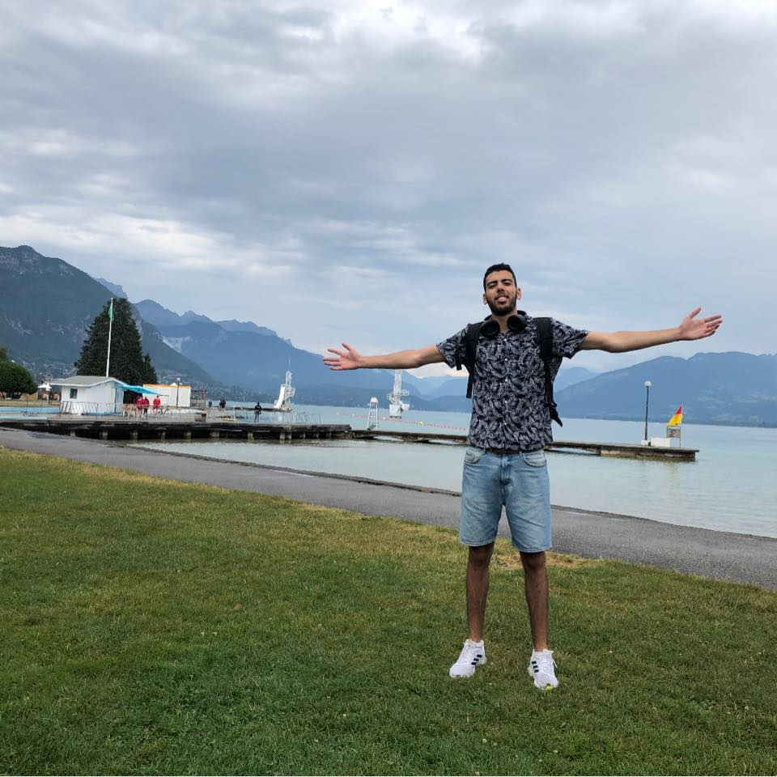

<aside id="colorlib-aside" role="complementary" class="border js-fullheight" style="height: 841px;">
    <div class="text-center">
       
       <h1 id="colorlib-logo"><a href="/">Ismail KOUIDI</a></h1>
    </div>
    <nav id="colorlib-main-menu" role="navigation" class="navbar">
       <div id="navbar">
          <ul>
             <li><a href="/" >Home</a></li>
             <li><a routerLink="/projects/java" >Java Projects</a></li>
             <li><a routerLink="/projects/js">JavaScript projects</a></li>
             <li><a [routerLink]="['/projects', 'devops']" >DevOps Projects</a></li>
          </ul>
       </div>
    </nav>
 </aside>